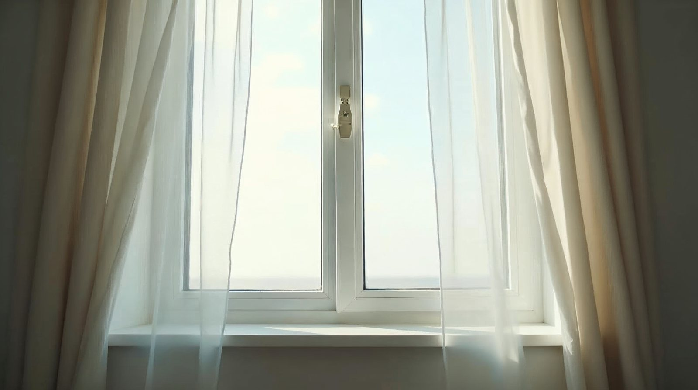
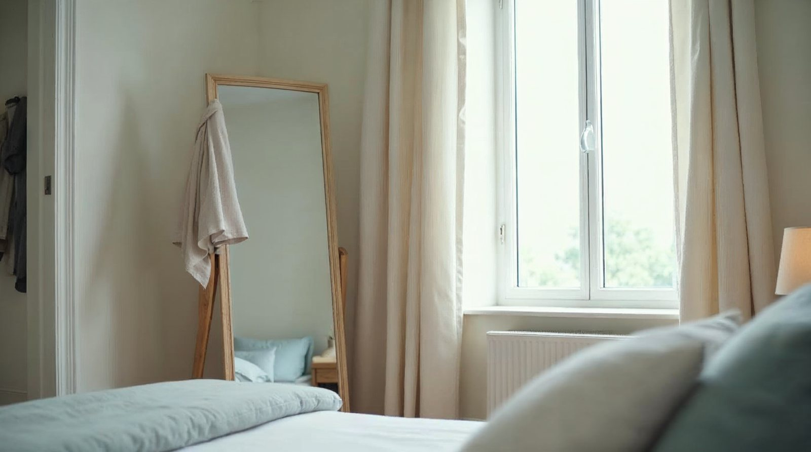
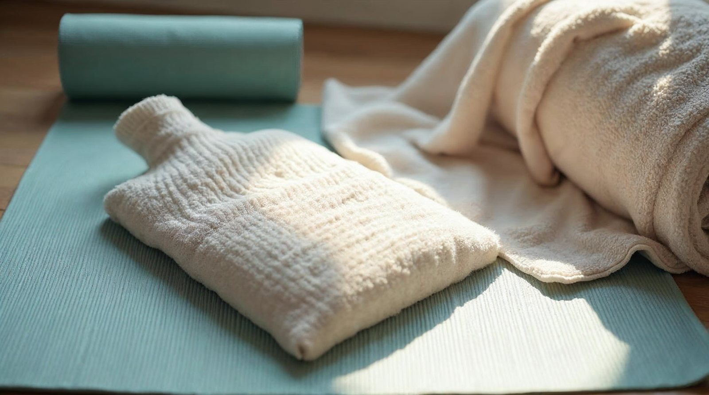
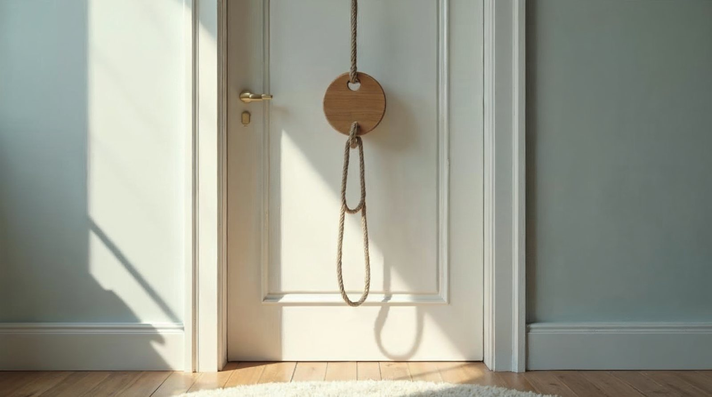

이종호 한의사 감수좋은꿈참사랑한의원 대표원장 (한의사 면허번호 19769)발행 2026-11-26 · 수정 2026-11-26
이 글의 차례
머리를 묶으려고 팔을 뒤로 돌리다 어깨 깊은 곳이 '턱' 하고 막힙니다. 버스 손잡이를 잡으려고 팔을 들다가 저도 모르게 얼굴을 찡그립니다. 낮에는 그럭저럭 참겠는데, 밤에 아픈 쪽으로 돌아눕는 순간 잠이 깨고 다시 잠들기가 어렵습니다.
오십견은 어깨 관절을 감싸고 있는 얇은 주머니(관절낭)에 염증이 생기고 두꺼워지면서 점점 굳어, 팔이 여러 방향으로 잘 올라가지 않는 상태를 말합니다. 정식 이름은 유착성 관절낭염입니다. 이름과 달리 오십 대에만 생기는 것은 아니고, 사십 대에서 육십 대 사이에 흔히 보입니다.
다만 팔을 못 드는 이유가 모두 오십견은 아닙니다. 넘어진 뒤 갑자기 팔을 들 수 없게 되었거나, 왼쪽 어깨와 함께 가슴이 답답하고 숨이 차거나 식은땀이 난다면 이 글보다 병원 확인이 먼저입니다. 가슴 증상이 함께 있으면 가까운 응급실로 가세요.
진료실에서 이런 말씀을 자주 듣습니다. "옷 입을 때마다 아파서 남편이 지퍼를 올려 줘요." "속옷 후크를 못 채워서 앞으로 돌려 입어요." 웃으며 하시는 말씀이지만, 그 하루하루가 얼마나 불편하고 서글플지 짐작이 됩니다. 밤잠까지 빼앗기면 마음도 같이 지칩니다.
저는 오십견을 '시간이 걸리는 어깨'라고 말씀드립니다. 하루아침에 굳지 않았듯 하루아침에 풀리지도 않습니다. 그 긴 시간을 덜 아프게, 덜 굳게 지나가도록 지금 어느 시기에 있는지부터 같이 보시지요.
왜 어깨가 이렇게 굳을까요
어깨는 우리 몸에서 가장 넓게 움직이는 관절입니다. 팔을 앞으로, 옆으로, 뒤로 돌리고 머리 위로 올릴 수 있는 것은 공처럼 생긴 위팔뼈 머리가 얕은 접시 위에서 넉넉하게 돌 수 있기 때문입니다. 그 넉넉함을 감싸 주는 것이 주름이 많은 관절 주머니입니다.
오십견에서는 이 주머니에 염증이 생기고, 시간이 지나며 두꺼워지고 오그라듭니다. 넉넉하던 주름이 들러붙으니 팔이 갈 수 있는 길이 사방에서 좁아집니다. 그래서 한 방향만이 아니라 앞으로 들기, 옆으로 들기, 바깥으로 돌리기, 등 뒤로 돌리기가 모두 막히는 것이 특징입니다.
왜 시작되는지는 아직 분명하게 밝혀지지 않았습니다. 특별한 계기 없이 오기도 하고, 어깨를 다치거나 수술 뒤 한동안 팔을 덜 쓴 다음에 오기도 합니다. 당뇨가 있거나 갑상선 질환이 있는 분에게서 더 흔하다고 알려져 있어, 저는 어깨 이야기를 하면서도 검진 결과를 함께 여쭙습니다.
한의학에서는 예부터 어깨가 굳고 시린 것을 '오십견(五十肩)', '동결견'이라 부르며, 찬 기운과 기혈의 흐름이 막힌 모습으로 살펴 왔습니다. 몸이 찬 분, 피로가 오래 쌓인 분, 잠이 무너진 분에게서 어깨가 더 쉽게 굳는다는 관찰은 지금 진료실에서도 자주 확인됩니다.
오십견은 시기를 나눠서 봅니다
오십견은 대개 세 시기를 지난다고 설명합니다. 사람마다 길이가 다르고 경계가 또렷하지 않지만, 지금 어디쯤인지 알면 해야 할 일과 하지 말아야 할 일이 달라집니다.
아픈 시기: 밤 통증이 가장 힘든 때
처음 몇 주에서 몇 달은 통증이 앞에 섭니다. 가만히 있어도 욱신거리고, 밤에 특히 심해 잠을 설칩니다. 움직임은 아직 조금씩 남아 있지만 아파서 덜 쓰게 됩니다. 이 시기에 억지로 팔을 꺾어 올리면 염증을 자극해 통증이 커질 수 있습니다.
굳는 시기: 통증은 줄어도 팔이 막히는 때
통증이 조금 누그러지는 대신 팔이 점점 굳어 갑니다. 아픈 것은 참을 만해졌는데 머리를 빗거나 뒷주머니에 손을 넣는 일이 안 됩니다. 이 시기에는 아프지 않은 범위에서 조금씩 움직이는 연습이 중요해집니다.
풀리는 시기: 천천히 길이 열리는 때
몇 달에 걸쳐 움직임이 조금씩 돌아오는 시기입니다. 전체 과정이 1~2년, 길면 그 이상 걸린다고 알려져 있고, 일부 움직임 제한이 남는 분도 있습니다. 기다리는 동안 무엇을 하느냐가 일상의 불편을 좌우합니다.

오십견과 헷갈리기 쉬운 어깨 통증
팔이 안 올라간다고 하면 모두 오십견이라고 생각하기 쉽지만, 진료실에서 보면 다른 이유인 경우도 많습니다.
어깨를 덮고 있는 힘줄 묶음(회전근개)이 어깨뼈 아래에서 끼이거나 닳은 경우에는, 팔을 옆으로 들 때 중간 높이에서만 아프고 끝까지 올리면 오히려 덜 아픈 경우가 많습니다. 스스로는 못 들어도 남이 받쳐 주면 끝까지 올라가는 것도 오십견과 다른 점입니다.
힘줄이 찢어진 경우에는 팔을 들어 올리는 힘 자체가 빠집니다. 특히 넘어지거나 무거운 것을 들다 '뚝' 하는 느낌 뒤에 팔을 들 수 없게 되었다면 정형외과에서 영상 확인이 먼저입니다. 목에서 내려오는 신경 문제로 어깨와 팔이 함께 저린 경우도 있어, 저림이 있는지도 꼭 여쭙습니다.
스스로 점검해 보세요
거울 앞에 서서 양쪽을 비교해 보세요. 아프면 거기서 멈추고, 억지로 더 올리지 않습니다.
- 양팔을 앞으로 나란히 들어 올렸을 때 아픈 쪽이 귀 높이까지 오는지
- 팔꿈치를 옆구리에 붙이고 손을 바깥으로 벌릴 때 아픈 쪽만 덜 벌어지는지
- 손등을 등 뒤로 돌렸을 때 엄지가 닿는 높이가 양쪽 얼마나 다른지
- 반대쪽 손으로 받쳐 줘도 더 올라가지 않는지
- 밤에 아픈 쪽으로 누우면 잠이 깨는지
방향을 나눠 살피는 자세한 방법은 오십견이 의심될 때 어깨가 어느 방향으로 안 올라가는지 먼저 살펴보려면 어떻게 하나요?에 따로 적어 두었습니다.

먼저 이렇게 여쭙니다
- 언제부터 아팠고, 그 무렵 넘어지거나 어깨를 다친 일이 있었나요?
- 밤에 아파서 깨시나요? 몇 번쯤 깨시나요?
- 머리 빗기, 옷 입기, 뒷주머니에 손 넣기 중 무엇이 가장 어려운가요?
- 스스로 올릴 때와 반대 손으로 받쳐 올릴 때 차이가 있나요?
- 손이나 팔로 내려가는 저림이 있나요?
- 당뇨, 갑상선 질환이 있거나 검진에서 혈당이 높다는 말을 들으셨나요?
- 지금 드시는 약과 주사 치료를 받은 적이 있는지 알려 주세요.
진료실에서 함께 확인하는 것
말씀을 들은 뒤에는 앉은 자세에서 팔을 앞으로, 옆으로, 바깥으로 돌려 보며 각 방향의 각도를 봅니다. 스스로 올린 높이와 제가 받쳐 올린 높이를 따로 적어 둡니다. 이 두 숫자의 차이가 오십견과 힘줄 문제를 가르는 중요한 단서가 됩니다.
어깨 앞과 옆, 날개뼈 주변을 눌러 보며 아픈 자리를 찾고, 목을 돌려 보며 팔로 저림이 내려가는지도 봅니다. 날개뼈가 어떻게 따라 움직이는지도 살핍니다. 어깨가 막히면 날개뼈가 대신 들리며 버티는 경우가 많기 때문입니다.
힘줄과 주변 조직의 모양을 볼 필요가 있다고 판단되면 초음파로 함께 확인합니다. 힘줄이 크게 찢어진 것이 의심되거나 영상 검사가 더 필요해 보이면 정형외과 진료를 먼저 안내합니다.

일상에서 먼저 해 볼 수 있는 것
- 아픈 시기에는 팔을 억지로 꺾지 말고, 통증이 크게 오르지 않는 범위에서만 하루 여러 번 짧게 움직이기
- 허리를 숙이고 아픈 팔을 늘어뜨려 작은 원을 그리듯 흔들어 주기
- 벽 앞에 서서 손가락으로 벽을 타고 조금씩 올라가 보기, 아픈 높이 직전에서 멈추기
- 따뜻한 샤워나 찜질 뒤에 움직이기
- 잘 때 아픈 쪽 팔 아래에 베개를 받쳐 팔이 뒤로 처지지 않게 하기
- 옷은 아픈 팔부터 넣어 입고, 벗을 때는 성한 팔부터 빼기
밤 통증이 심할 때는 잠자리부터 손봅니다. 바로 누울 때 아픈 쪽 팔꿈치 아래에 얇은 베개를 받쳐 팔이 몸보다 약간 앞에 오게 하면 한결 편하다는 분이 많습니다. 옆으로 누우신다면 성한 쪽으로 눕고, 아픈 팔은 베개를 안듯이 올려 둡니다.
"아파도 참고 돌려야 풀린다"는 말을 듣고 매일 이를 악물고 팔을 꺾으시는 분이 계십니다. 아픈 시기에 그렇게 하면 염증이 더 커지고 밤잠이 더 무너질 수 있습니다. 운동의 강도는 시기에 따라 달라야 합니다. 저는 '아프기 직전까지, 자주, 짧게'를 기준으로 말씀드립니다.
한쪽 팔이 불편하면 다른 팔과 목, 허리가 대신 일하느라 같이 지칩니다. 그래서 어깨만 보지 마시고 반대쪽 어깨와 목도 가끔 풀어 주세요. 잠이 깨는 밤이 이어지면 낮잠보다 밤잠 시각을 일정하게 맞추는 쪽이 회복의 바탕이 됩니다.
예를 들면 이런 경우입니다
실제 어느 분의 사연이 아니라, 진료실에서 자주 보는 모습을 바탕으로 그려 본 장면입니다.
예를 들어 혈당이 경계라는 말을 들은 지 몇 해 된 분이 특별히 다친 일도 없는데 어깨가 서서히 굳어 간다면, 어깨와 함께 혈당 흐름과 잠을 같이 봅니다. 내과 검진 결과를 함께 가져와 달라고 부탁드리는 이유입니다.
손목이나 팔꿈치를 다쳐 한동안 팔을 깁스나 보조기로 고정했던 분이라면, 팔을 풀고 나서 어깨까지 굳어 있는 경우가 있습니다. 이럴 때는 다쳤던 자리만 보지 말고 어깨가 방향별로 얼마나 움직이는지 일찍 확인해 두시는 편이 좋습니다.

한의원에서 함께 살필 수 있는 경우
- 밤 통증 때문에 잠을 설치고 낮에도 욱신거림이 이어지는 경우
- 통증은 줄었는데 팔이 굳어 옷 입기와 머리 빗기가 어려운 경우
- 어깨가 굳으며 목과 날개뼈 주변까지 함께 결리는 경우
- 몸이 차고 피로가 쌓여 어깨가 더 시리게 느껴지는 경우
좋은꿈참사랑한의원에 처음 오시면 위에서 말씀드린 위험 신호가 없는지부터 확인하고, 모든 분께 맥을 짚습니다. 이어서 방향별로 팔 높이를 재고 아픈 자리를 확인한 다음, 지금이 아픈 시기에 가까운지 굳는 시기에 가까운지 함께 정리합니다.
그 시기에 맞춰 침과 약침, 온열 치료 같은 물리치료, 굳은 관절 주변을 부드럽게 움직여 보는 추나 가운데 방법을 진찰 뒤에 고릅니다. 힘줄 쪽 문제가 함께 보이는 경우에는 체외충격파를 상의하기도 합니다. 왜 그 방법을 고르는지, 어떤 느낌이 들 수 있는지 미리 설명해 드립니다.
몸이 차고 잠이 무너진 분께는 맥과 몸 상태를 보고 한약 상담을 함께 하기도 합니다. 당뇨약이나 갑상선 약을 드시고 계시다면 그 약은 그대로 유지하시고, 함께 드시는 약을 모두 알려 주세요.
다시 오시면 지난번 적어 둔 팔 높이와 등 뒤 손 높이를 같은 방법으로 다시 재어 비교합니다. 숫자가 그대로라면 방법을 바꾸고, 정형외과 진료가 더 필요해 보이면 그렇게 안내합니다.
이렇게 기록해 오시면 상담이 쉬워집니다
- 처음 아프기 시작한 때와 그 무렵 있었던 일(다침, 수술, 큰 피로)
- 밤에 깬 횟수와 아파서 깬 시각
- 일주일에 한 번, 벽을 타고 올라간 손끝 높이(벽에 붙임쪽지로 표시)
- 등 뒤로 돌린 엄지가 닿는 자리(허리띠, 허리 위, 날개뼈 아래 등)
- 가장 불편한 일상 동작 두세 가지
- 검진 결과지(혈당, 갑상선)와 드시는 약 이름
벽에 붙여 둔 쪽지 높이는 말로 하는 "조금 나아진 것 같아요"보다 훨씬 많은 것을 알려 줍니다. 오십견은 변화가 느려 스스로는 그대로라고 느끼기 쉬운데, 몇 주 치 표시를 나란히 놓으면 흐름이 보입니다.
이런 증상은 먼저 확인이 필요합니다
- 넘어지거나 부딪힌 뒤 갑자기 팔을 들 수 없게 된 경우
- 어깨 모양이 달라 보이거나 심하게 붓고 멍이 든 경우
이런 신호가 있으면 한의원보다 가까운 병원이나 응급실을 먼저 찾으세요.
팔 하나가 안 올라가는 것만으로도 하루의 많은 일이 낯설어집니다. 그 불편을 몇 달씩 견뎌 오셨다면 이미 충분히 애쓰셨습니다. 서두르지 않고, 시기에 맞게 같이 가 보겠습니다. 다음에 오시면 벽 위 쪽지가 어디까지 올라갔는지부터 여쭙겠습니다.
함께 읽으면 좋은 글
- 팔이 올라가지 않고 어깨가 굳어 갈 때(오십견)는 일상에서 무엇을 살피나요?
- 오십견이 의심될 때 어깨가 어느 방향으로 안 올라가는지 먼저 살펴보려면 어떻게 하나요?
- 옆으로 누우면 어깨가 아파 잠을 설칠 때는 어떻게 하나요?
- 어르신이 팔을 위로 올리기 힘들고 밤에 어깨가 아플 때는 어떻게 살피나요?
- 팔을 들 때 어깨가 걸리듯 아픈 충돌증후군·회전근개 문제는 어떻게 살피나요?
여쭙는 것
- 언제부터 아팠고, 그 무렵 넘어지거나 어깨를 다친 일이 있었나요?
- 밤에 아파서 깨시나요? 몇 번쯤 깨시나요?
- 머리 빗기, 옷 입기, 뒷주머니에 손 넣기 중 무엇이 가장 어려운가요?
생활에서 해 볼 것
- 아픈 시기에는 팔을 억지로 꺾지 말고, 통증이 크게 오르지 않는 범위에서만 하루 여…
- 허리를 숙이고 아픈 팔을 늘어뜨려 작은 원을 그리듯 흔들어 주기
- 벽 앞에 서서 손가락으로 벽을 타고 조금씩 올라가 보기, 아픈 높이 직전에서 멈추기
한의원에서 함께 살필 것
- 밤 통증 때문에 잠을 설치고 낮에도 욱신거림이 이어지는 경우
- 통증은 줄었는데 팔이 굳어 옷 입기와 머리 빗기가 어려운 경우
- 어깨가 굳으며 목과 날개뼈 주변까지 함께 결리는 경우
먼저 확인이 필요한 신호
- 넘어지거나 부딪힌 뒤 갑자기 팔을 들 수 없게 된 경우
- 어깨 모양이 달라 보이거나 심하게 붓고 멍이 든 경우
한눈에 보는 표
| 구분 | 핵심 |
|---|---|
| 여쭙는 것 | 언제부터 아팠고, 그 무렵 넘어지거나 어깨를 다친 일이 있었나요? 밤에 아파서 깨시나요? 몇 번쯤 깨시나요? |
| 생활에서 해 볼 것 | 아픈 시기에는 팔을 억지로 꺾지 말고, 통증이 크게 오르지 않는 범위에서만 하루 여러 번 짧게 움직이기 허리를 숙이고 아픈 팔을 늘어뜨려 작은 원을 그리듯 흔들어 주기 |
| 한의원에서 함께 살필 것 | 밤 통증 때문에 잠을 설치고 낮에도 욱신거림이 이어지는 경우 통증은 줄었는데 팔이 굳어 옷 입기와 머리 빗기가 어려운 경우 |
| 먼저 확인이 필요한 신호 | 넘어지거나 부딪힌 뒤 갑자기 팔을 들 수 없게 된 경우 어깨 모양이 달라 보이거나 심하게 붓고 멍이 든 경우 |
자주 묻는 질문
오십견은 그냥 두면 저절로 풀린다던데 기다려도 되나요?
시간이 지나며 움직임이 돌아오는 경우가 많다고 알려져 있지만, 1~2년 넘게 걸리기도 하고 일부 제한이 남는 분도 있습니다. 기다리는 동안 밤잠과 일상 동작을 어떻게 지킬지, 시기에 맞는 움직임을 함께 정하는 편을 권합니다.
오십견과 회전근개 문제는 어떻게 다른가요?
오십견은 스스로 들 때도, 남이 받쳐 줄 때도 여러 방향이 함께 막히는 편입니다. 힘줄 문제는 스스로는 아파서 못 들어도 받쳐 주면 올라가는 경우가 많습니다. 둘이 함께 있기도 해 진찰과 필요하면 초음파·영상으로 나눠 봅니다.
아파도 참고 스트레칭을 해야 하나요?
통증이 앞서는 시기에 억지로 꺾으면 염증을 자극할 수 있습니다. 아프기 직전까지만 자주, 짧게 움직이고, 굳는 시기로 넘어가면 범위를 조금씩 넓히는 쪽을 권합니다.
당뇨가 있으면 오십견이 더 잘 생기나요?
당뇨나 갑상선 질환이 있는 분에게서 더 흔하고 오래가는 경향이 있다고 알려져 있습니다. 혈당 관리는 내과와 이어 가시고, 진료 때 검진 결과와 드시는 약을 알려 주세요.
양쪽 어깨에 다 올 수도 있나요?
한쪽이 지나간 뒤 반대쪽에 생기는 분도 있습니다. 반대쪽 어깨가 뻐근해지기 시작하면 이른 시기에 방향별 움직임을 확인해 두시길 권합니다.
좋은꿈참사랑한의원은 재진 때 지난번 이야기부터 이어서 여쭙니다. 진료시간과 예약은 오시는 길에서 확인하세요.
어디서 상담받을 수 있나요?
좋은꿈참사랑한의원은 서울 동작구 만양로2길 2 신성빌딩 3층·5층(서울 동작구 상도동, 7호선 상도역 3번 출구 근처)에 있습니다. 한의사 3명(이종호 대표원장, 조영기 수석진료원장, 정원영 진료원장)이 진료합니다. 진료시간은 평일 09:30~20:00(점심 13:00~14:00), 토·일·공휴일 09:30~15:00이며, 방문 전 전화로 확인을 권합니다. 예약은 네이버 예약, 카카오톡 상담, 전화 02-815-7510로 받습니다.
이 글은 일반적인 건강 정보이며 개인의 진단이나 치료를 대신하지 않습니다. 증상이 있거나 복용 중인 약이 있다면 진료를 통해 확인하세요. 치료 효과는 개인마다 다를 수 있습니다.
작성 기준: 일반적으로 알려져 있는 건강 정보를 참고해 정리했습니다(대표원장 감수). 증상 기록은 1~2주 동안 하루 1회, 비슷한 시간에 적어 오시면 지난 상태와 비교하기 쉽습니다.